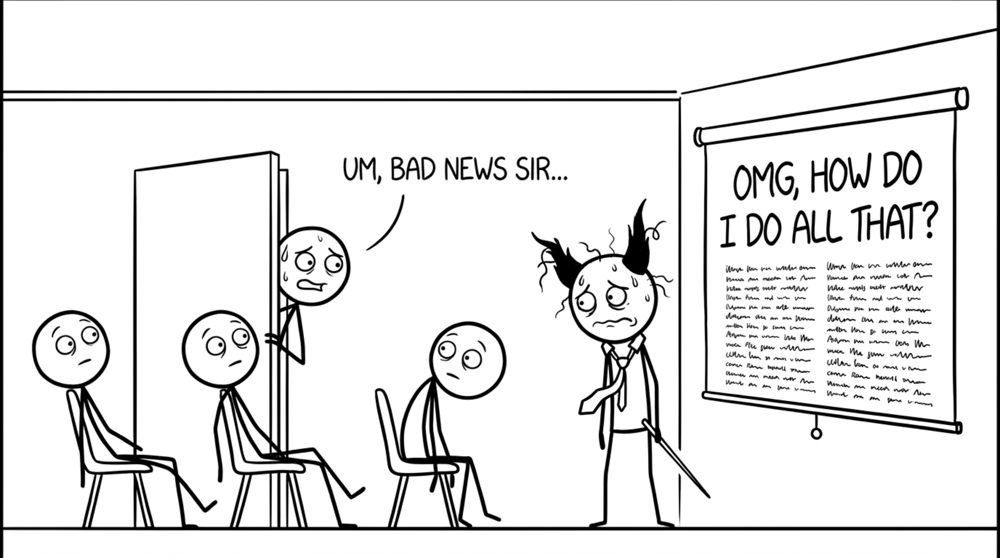

<section id="bad-news" data-transition="fade" style="display:flex; align-items:center; justify-content:center; padding:0; background:#fcfcfa">

<p style="position:absolute;left:0;bottom:10px;width:1920px;margin:0;text-align:center;font-family:'Patrick Hand', 'Trebuchet MS', sans-serif;font-size:22px;color:#8a8f98">Copyright Dobromir Montauk 2026</p>
<aside><b>Bad news.</b> Let it sit for a second. You will get this message on the day you finally have a plan you like. Every manager has had the Slack DM that starts with "hey, got a minute?" at 4:55 on a Friday. It's not a sign the plan was bad. It's what the job actually looks like.</aside>
</section>
